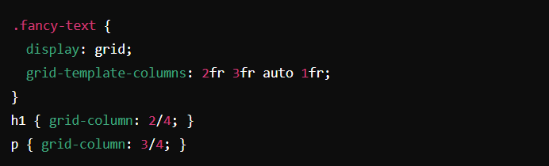

Nerd 4: Nils Binder
We want to control everything on the web
Samenvatting
Nils Binder, een ervaren developer bij 9elements in Bochum, gaf een boeiende Weekly Nerd lezing over CSS. Naast zijn lezing, was hij ook een week lang gastdocent voor het vak CSS. Nils' lezing richtte zich op het optimaliseren van CSS voor betere controle en responsiviteit op het web. Enkele belangrijke punten uit zijn presentatie:
- Wrapper Centring Nils legde zowel de oude als de nieuwe manier uit om content te centreren met een wrapper.
Figma en CSS Units Hij benadrukte het belang van het communiceren van unit types met designers en introduceerde verschillende CSS units die bruikbaar zijn in Figma's dev mode.
- dvw/dvh Viewport width/height
- ch Character width
- vi/vb Viewport inline/block direction
- lvh/lvb/lvw/lvi Largest viewport dimension
- svh/svb/svw/svi Smallest viewport dimension
- dvb/dvi Device viewport
- lvmin/svmin/dvmin Viewport minimum
- lvmax/svmax/dvmax Viewport maximum
- cqw/cqi/cqh/cqb Query container
- cqmin/cqmax Dynamic sizing of containing element
Column Techniek Hij introduceerde een grid-based layout techniek waarbij kolommen worden gebruikt met de "fr" unit. Deze techniek zorgt ervoor dat content schaalt afhankelijk van de beschikbare ruimte.
Reflectie
Ik vond Nils zijn lezing erg interessant en leerzaam. Zijn benadering van CSS en de introductie van nieuwe units gaven me nieuwe inzichten die ik direct kan toepassen. De column techniek is bijzonder nuttig en ik waardeer zijn combinatie van ontwikkeling en design. Zijn presentatie was boeiend en hield mijn aandacht vast gedurende de hele sessie.
Conclusie
Nils Binder's lezing over CSS was zowel informatief als inspirerend. De praktische tips en technieken, gecombineerd met zijn ervaring als zowel developer als designer, maakten het een waardevolle sessie. Daarom geef ik deze Weekly Nerd een rating van 8/10.